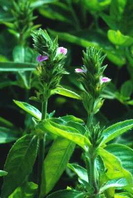

|
ECONOMICALLY
IMPORTANT PLANTS OF INDIA |
| Under-utilized Food and Fodder species and their wild relatives | Contributed by Ms.M.L Annapurna And Dr. Dhanapal, UAS, Bangalore |
Justicia procumbens

Taxonomic
Details
----- Correct Name
----- Classification
----- Synonyms
----- Common Names
Other Biological Details
----- Habit and Habitat
----- Diagnostic Features
----- Reproductive Biology
---------- Breeding System
---------- Phenology
---------- Pollinators
---------- Seed Biology
----------Seed Germination
------ Cultivation
----- Major Pests and Diseases
Economic Potential and Uses
----- Parts Used
-----Uses
----- Harvesting Practices
----- Produce and Products
----- Chemistry
----- Processing Techniques
----- Other uses
----- Economic Potential to the
Country
----- Export Potential
Miscellaneous Information
Literature
Correct
Name : Justicia
procumbens Linn.
Family : Oleaceae
Synonyms :
Common Names :
Tamil: Ottu pillu,, poom-pillu, palkodi, nerei-pootie.
Marati: Karambal, kalmashi;
Misc:
Bombay-
Ghati-pitpapra, pitpapada.
HABIT & HABITAT
A
procumbent, diffuse, slender, branching annual, 4-16 in. high, distributed in
Availability :
Status :
DIAGNOSTIC
FEATURES
Leaves
elliptic or lanceolate ; flowers pale purple, in dense, cylindrical terminal
spikes ; capsules oblong, shortly pointed, pubescent at the tip ; seeds finely
tuberculate.
REPRODUCTIVE
BIOLOGY
Breeding System :
Phenology :
Pollinators:
Ants
(Black).
Seed Biology :
Seeds
with thin testa
Seed Germination:
Germination
is 62%.
MAJOR
PESTS & DISEASES
Pests:
Diseases:
Parts
used
Plant, Leaves.
1.
It is
considered laxative, diaphoretic, diuretic, alterative, expectorant,
anthelmintic and febrifuge.
2.
The juice of
the leaves is squeezed into the eye in cases of ophthalmia.
3.
An infusion of
the herb is given in asthma, cough, rheumatism, backache, plethora, flatulence
and lumbago.
4.
A decoction of
leaves is sometimes used in the treatment of curva- ture and diseases of the
bone.
5.
The Mundas are
reported to use the herb for the treatment of wounds in buffaloes